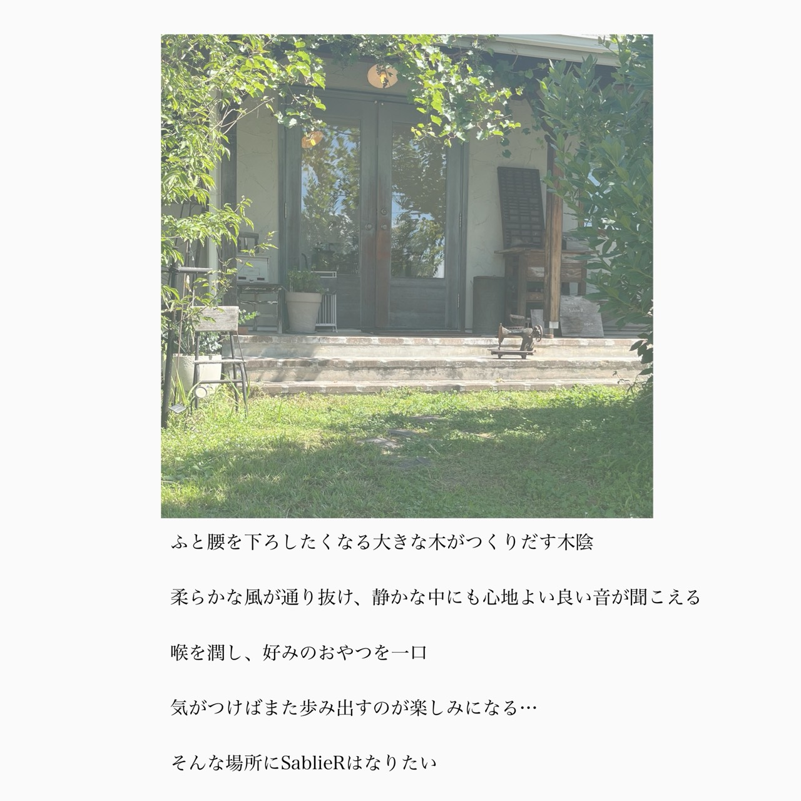

SablieR飯田・育良町
ABOUT
SablieRについて
ふと腰を下ろしたくなる大きな木がつくりだす木陰
柔らかな風が通り抜け、
静かな中にも心地よい良い音が聞こえる
喉を潤し、好みのおやつを一口
気がつけばまた歩み出すのが楽しみになる…
そんな場所に
SablieRはなりたい
01
髪
HAIR SALON
いつでも、いつまでも
居心地の良い空間で、
日々の暮らしを快適に
気分良く過ごせる為の
お手伝いになれますように...
02
お菓子
BAKE
季節のフルーツやこだわり抜いた原料でつくる
小さなオヤツ屋。
日々のご褒美として
お選びいただけたら嬉しいです。
03
古道具
OLD THINGS
眺める度、使う度に
嬉しくなるような、
たったひとつしかない
味わい深い『あなたのお気に入り』に
出会えるお力になれれば
幸いです。
VISIT US
お店のご案内
髪とお菓子と古道具
SablieR
- 所在地
- 〒395-0152
長野県飯田市育良町2丁目21-1
Google Mapsで見る - アクセス
- 切石駅から1,015m
- お電話
- 0265-22-3888
- 営業のご案内
- 不定休
営業時間はお電話にてお問い合わせください。 - 公式LINE
- 公式LINEを開く友だち追加はこちらから
- @sablier_bake